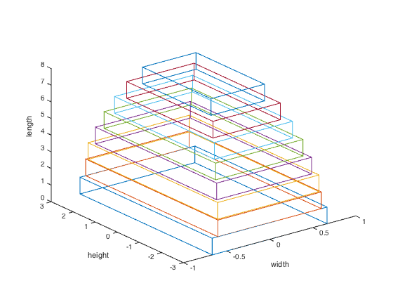

% Boyd & Vandenberghe "Convex Optimization" % (a figure is generated) % Almir Mutapcic 02/08/06 % % We have a segmented cantilever beam with N segments. Each segment % has a unit length and variable width and height (rectangular profile). % The goal is minimize the total volume of the beam, over all segment % widths w_i and heights h_i, subject to constraints on aspect ratios, % maximum allowable stress in the material, vertical deflection y, etc. % % The problem can be posed as a geometric program (posynomial form) % minimize sum( w_i* h_i) % s.t. w_min <= w_i <= w_max, for all i = 1,...,N % h_min <= h_i <= h_max % S_min <= h_i/w_i <= S_max % 6*i*F/(w_i*h_i^2) <= sigma_max % y_1 <= y_max % % with variables w_i and h_i (i = 1,...,N). % For other definitions consult the book. % (See exercise 4.31 for a non-recursive formulation.) % optimization variables N = 8; % constants wmin = .1; wmax = 100; hmin = .1; hmax = 6; Smin = 1/5; Smax = 5; sigma_max = 1; ymax = 10; E = 1; F = 1; cvx_begin gp % optimization variables variables w(N) h(N) % setting up variables relations % (recursive formulation) v = cvx( zeros(N+1,1) ); y = cvx( zeros(N+1,1) ); for i = N:-1:1 fprintf(1,'Building recursive relations for index: %d\n',i); v(i) = 12*(i-1/2)*F/(E*w(i)*h(i)^3) + v(i+1); y(i) = 6*(i-1/3)*F/(E*w(i)*h(i)^3) + v(i+1) + y(i+1); end % objective is the total volume of the beam % obj = sum of (widths*heights*lengths) over each section % (recall that the length of each segment is set to be 1) minimize( w'*h ) subject to % constraint set wmin <= w <= wmax; hmin <= h <= hmax; Smin <= h./w <= Smax; 6*F*[1:N]'./(w.*(h.^2)) <= sigma_max; y(1) <= ymax; cvx_end % display results disp('The optimal widths and heights are: '); w, h fprintf(1,'The optimal minimum volume of the beam is %3.4f.\n', sum(w.*h)) % plot the 3D model of the optimal cantilever beam figure, clf cantilever_beam_plot([h; w])
Building recursive relations for index: 8
Building recursive relations for index: 7
Building recursive relations for index: 6
Building recursive relations for index: 5
Building recursive relations for index: 4
Building recursive relations for index: 3
Building recursive relations for index: 2
Building recursive relations for index: 1
Successive approximation method to be employed.
SDPT3 will be called several times to refine the solution.
Original size: 231 variables, 88 equality constraints
23 exponentials add 184 variables, 115 equality constraints
-----------------------------------------------------------------
Cones | Errors |
Mov/Act | Centering Exp cone Poly cone | Status
--------+---------------------------------+---------
15/ 15 | 8.000e+00 6.560e-01 0.000e+00 | Solved
23/ 23 | 2.725e-01 5.153e-03 0.000e+00 | Solved
16/ 16 | 1.372e-02 1.293e-05 0.000e+00 | Solved
6/ 11 | 1.057e-03 6.085e-08 0.000e+00 | Solved
0/ 0 | 8.196e-05 0.000e+00 0.000e+00 | Solved
-----------------------------------------------------------------
Status: Solved
Optimal value (cvx_optval): +42.3965
The optimal widths and heights are:
w =
0.6214
0.7830
0.9060
1.0124
1.1004
1.1762
1.2000
1.3333
h =
3.1072
3.9149
4.5299
5.0620
5.5019
5.8811
6.0000
6.0000
The optimal minimum volume of the beam is 42.3965.
